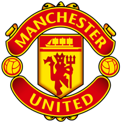

Manchester UnitedRok założenia: 1878
Barwy: czerwono-biało-czarne
Główny sponsor: TeamViewer, Adidas
Przydomek: "Czerwone Diabły"
Honorowy prezes: Martin Edwards
Właściciel: Rodzina Glazerów
Menadżer: Erik ten Hag (zatrudniony - 21 kwietnia 2022)
Najwyższe zwycięstwo: 10:0 z Anderlechtem Bruksela (el. Pucharu Europy, 26.09.1956)
Najwyższa porażka: 0:7 z Blackburn Rovers (First Division, 10.04.1926)
Poprzednia nazwa: Newton Heath (1878- 1902)